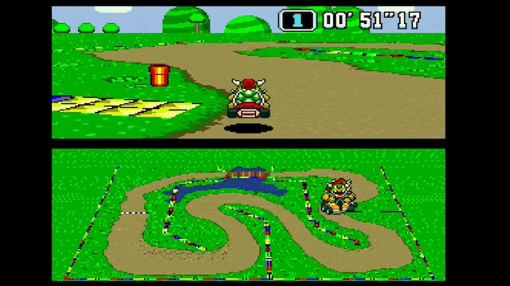

MARIO KART GAMES

The mario kart game franchise currently has 14 games from the series starting back in 1992 with super mario kart on the super nintendo or the snes. this was a being of a still going era where as of 2021 the technolgically imporovments in the racing games scence. the core game over the years has not changed much with you still play against npcs with powerups and drive around a track. Also in verysingle one of the mario karts ninetendo brings back old tracks from older games like in mario kart 8 deluxe has moo moo meddows from the wii as long as grumble volcano. the main differnce between the games from now and from 1992 is the game engine which in modern times does not allow for ultra shortcuts(see world records). this is why i think that mario kart wii is the best because it is right in the middle of modern game to also having the glitches and bugs which i think add to the game.
below you can see the differnce in the games for the same track 26 years apart
